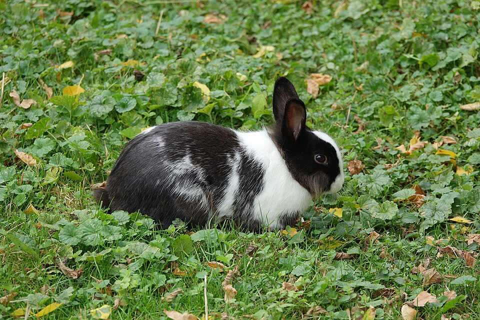

Nom scientifique : Oryctolagus cuniculus pour le lapin européen. Durée de vie : généralement 8 à 12 ans pour un lapin domestique bien soigné. Poids : entre 1 et 80 kg selon la race, parfois davantage. Température corporelle : environ 38,5 à 40 °C.>
Le lapin est un petit mammifère herbivore.Il mange principalement du foin,de l'herbe et des légumes.
Pas que CHEZ DIANE,Le lapin peut vivre aussi dans des terriers qu'il creuse dans la terre. Il aime les endroits ou il peut se cacher et trouver de la nourriture.
